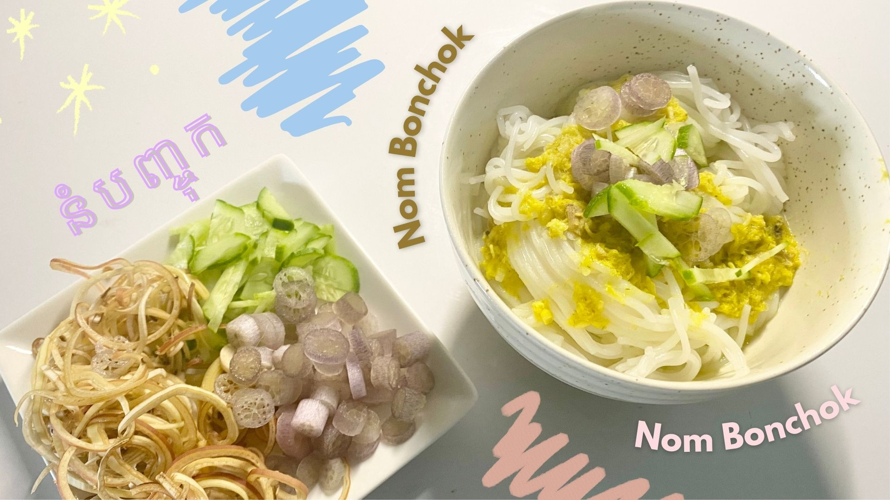
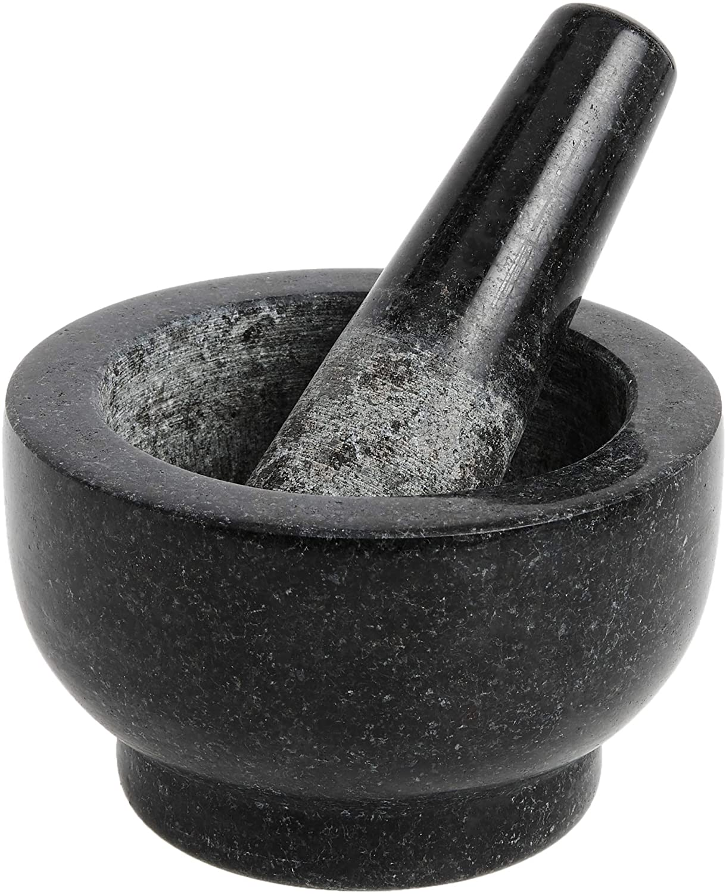
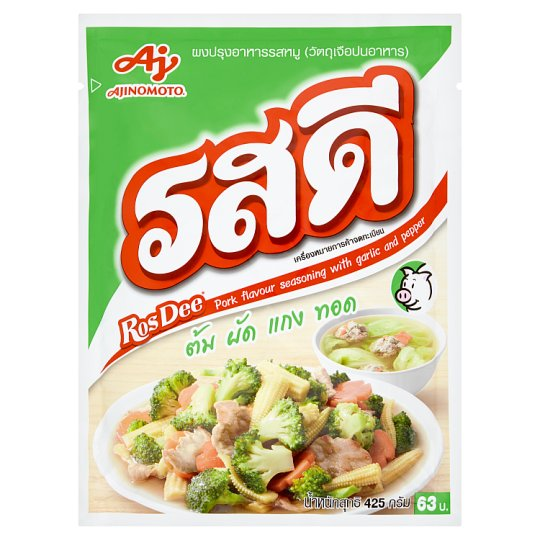
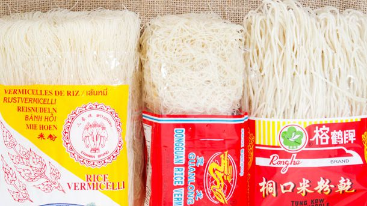

Nom Banh Chok.
Nom Banh Chok has a very distinctive taste of the fermented fish paste. It is Khmer noodles with tasty fish broth, serve with freshly forged wild greens.
Ingredients.
- Any type of fish (mudfish, catfish or tilapia)
- 2L of coconut milk
- 8L of water
- 4pcs of Pandan leaves
- 4tbsp of Rosdee powder
- rice vermicelli noodles
- 50g of garlic
- 2pcs of Chinese ginger
- 10g of turmeric
- 5kg or rice vermicelli noodles
- 200g of palm sugar
- salt and sugar
- 200g of peanuts
- 100g of Prahok (fermented fish paste)
- fresh vegetables: cucumbers, lotus stem, banana blossoms, etc.
- *you need a mortar and pestle*

mortar and pestle

rosdee powder

chinese ginger

prahok

rice vermicelli noodles
Instructions.
- First, boil 8L of water in a pot.
- Take the Pandan leaves and tie them together, creating a small knot in the middle. Add it into the boiling water.
- Add in 2 tbsp of salt, 4 tbsp of Rosdee powder, and add in 4 tbsp of sugar. Then, stir it a bit until the dry ingredients fully dissolve.
- Now, put in the fish and leave it for 15 minutes until it's fully cooked.
- After 15 minutes is over, take the fish out and let it cool down for a while.
- Then, add 1.5L of coconut milk into the broth and let boil for a while.
- In a pan, add 200g of palm sugar. Boil it until the bubbles start appearing. Then, add 250ml of coconut milk into the sugar. Stir to combine them together.
- Add in 1/2 tbsp of salt and boil the mixture for 10 minutes using low medium heat.
- After it's boiled, add in 200g of crushed peanuts. Stir it well and boil it for another 5 minutes.
- In a mortar, add 50g of garlic, 2pcs of Chinese ginger as well as 10g of turmeric, and crush them all together until it's fully combined.
- With the fish from earlier, remove all its bone and leave their fillet. Add 800g of it into the mortar. Then, crush everything together until it is fully squashed into small pieces.
- Back to the broth: using 100g of prahok or fermented fish paste and mix it with a small scoop of the broth. Stir it a bit and drain the broth back into the pot just to get the fermented fish flavor. Repeat that step 2-3 times.
- Afterwards, add the mixture from the mortar to the broth. Then, add the coconut milk mixture from the pan into the broth as well. Stir it continuously until you get that greenish-yellow color.
- Now that your broth is ready, put in any amount of rice vermicelli noodles into a bowl and pour some broth on top of it.
- Top your Nom Banh Chok with some cucumbers, lotus stem, banana blossoms, and other green vegetables.
- Now, your Nom Banh Chok is ready to enjoy!
Reference.
- Marquez, Romae Chanice, and Desi Dakaar. “Nom Banh Chok: How to Make Cambodian Khmer Noodles.” DesiDakaar, 1 Jan. 1968, Link Here
- “នំបញ្ចុកសម្លរខ្មែរ/នំបញ្ចុកសម្លរប្រហេីរ/Khmer noodle soup/#52(Chay saorath).” Youtube, Chay Saorath, 12 Apr 2020, https://www.youtube.com/watch?v=OO0o9-0AVns
- Chinese Ginger link)
- Prahok (image link)
- Rosdee Powder (image link)
- Rice Vermicelli Noodles (image link)
- Mortar and Pestle (image link)
{kind=link}
{kind=link}
{kind=link}
/__opt__aboutcom__coeus__resources__content_migration__serious_eats__seriouseats.com__images__2012__07__20120726-chichis-chinese-dried-rice-noodles-primary-86fb4901fdd8471f8a5e4df481236785.jpg){kind=link}
{kind=link}